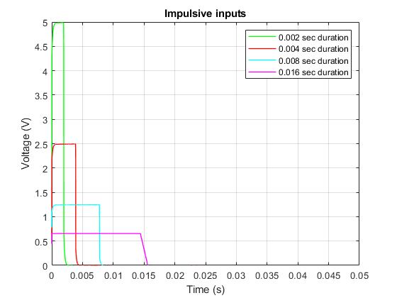
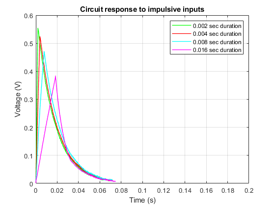
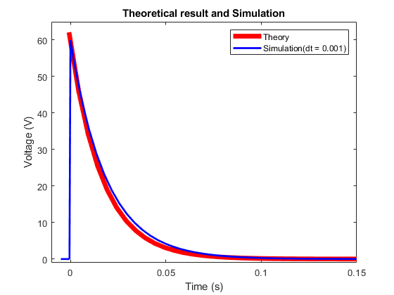

Contents
% Lane Levine, Derrick Rasser, Wesley Schumacher % Group 41 % Lab 3 MATLAB clc;close all; % Read in the data that was collected using WaveForms %Experiment:1 Vin:.625 dT:.016 Area:.01 [Voltage1] = xlsread('Lab3dataExperiment1.csv'); %Experiment:2 Vin:1.25 dT:.0.08 Area:.01 [Voltage2] = xlsread('Lab3dataExperiment2.csv'); %Experiment:3 Vin:2.5 dT:.0.04 Area:.01 [Voltage3] = xlsread('Lab3dataExperiment3.csv'); %Experiment:4 Vin:5 dT:.0.02 Area:.01 [Voltage4] = xlsread('Lab3dataExperiment4.csv'); %Experiment:5(We didnt do due to limitations of AD2) Vin:10 dT:.0.01 Area:.01 [Voltage5] = xlsread('Lab3dataExperiment5.csv'); % Extract each column (time, step function value, voltage value) time1 = Voltage1(:,1); step1 = Voltage1(:,2); voltage1 = Voltage1(:,3); time2 = Voltage2(:,1); step2 = Voltage2(:,2); voltage2 = Voltage2(:,3); time3 = Voltage3(:,1); step3 = Voltage3(:,2); voltage3 = Voltage3(:,4); time4 = Voltage4(:,1); step4 = Voltage4(:,2); voltage4 = Voltage4(:,3); time5 = Voltage3(:,5); step5 = Voltage5(:,2); voltage5 = Voltage5(:,3); % Find data for 0.2 second interval t1 = time1(1:8000); v1 = voltage1(1:8000); s1 = step1(1:8000); t2 = time2(1:8000); v2 = voltage2(1:8000); s2 = step2(1:8000); t3 = time3(1:8000); v3 = voltage3(1:8000); s3 = step3(1:8000); t4 = time4(1:8000); v4 = voltage4(1:8000); s4 = step4(1:8000); t5 = time5(1:8000); v5 = voltage5(1:8000); s5 = step5(1:8000); figure(1)
Plot experimental input
plot(t4,s4,'g','Linewidth',1) hold on plot(t2,s2,'r','Linewidth',1) plot(t1,s1,'c','Linewidth',1) plot(t3,s3,'m','Linewidth',1) %(We didnt do due to limitations of AD2) %plot(t5,s5,'b','Linewidth',1) grid on xlim([0,0.05]) ylim([0,5]) xlabel('Time (s)') ylabel('Voltage (V)') title('Impulsive inputs') legend('0.002 sec duration','0.004 sec duration',... '0.008 sec duration','0.016 sec duration') figure(2)
Plot experimental output
plot(t4,v4,'g','Linewidth',1) hold on plot(t2,v2,'r','Linewidth',1) plot(t1,v1,'c','Linewidth',1) plot(t5,v3,'m','Linewidth',1) %(We didnt do due to limitations of AD2) %plot(t5,v5,'b','Linewidth',1) grid on xlim([0,0.2]) ylim([0,0.6]) xlabel('Time (s)') ylabel('Voltage (V)') title('Circuit response to impulsive inputs') legend('0.002 sec duration','0.004 sec duration',... '0.008 sec duration','0.016 sec duration')
plot theoredtical result and simulation
Define R, C, and Time Constant
R1 = 5.1*10^3; C1 = 3.3*10^-6; tau = R1*C1; % Define a time interval and timestep t = -0.00075:0.005:0.2; x = -0.0005:0.000001:0; y = (120000*x + 60); x2 = -0.005:0.0001:-0.0005; y2 = 0* x2; % Define theoretical output equation Vin = 1/tau * exp(-t./tau); figure(3) % Plot theoretical output plot(t,Vin,'r','Linewidth',5) axis([-0.01 0.15 -1.0 65]) hold on % Plot simulation output from Simulink plot(out.tout,out.vin,'b','Linewidth',2) hold on plot(x,y,'b','Linewidth',2) plot(x2,y2,'b','Linewidth',2) xlabel('Time (s)') ylabel('Voltage (V)') title('Theoretical result and Simulation') legend('Theory','Simulation(dt = 0.001)')